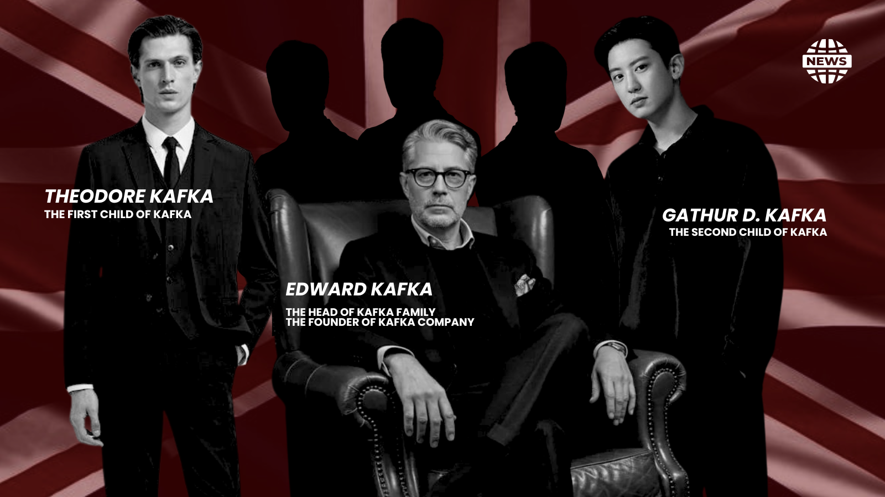
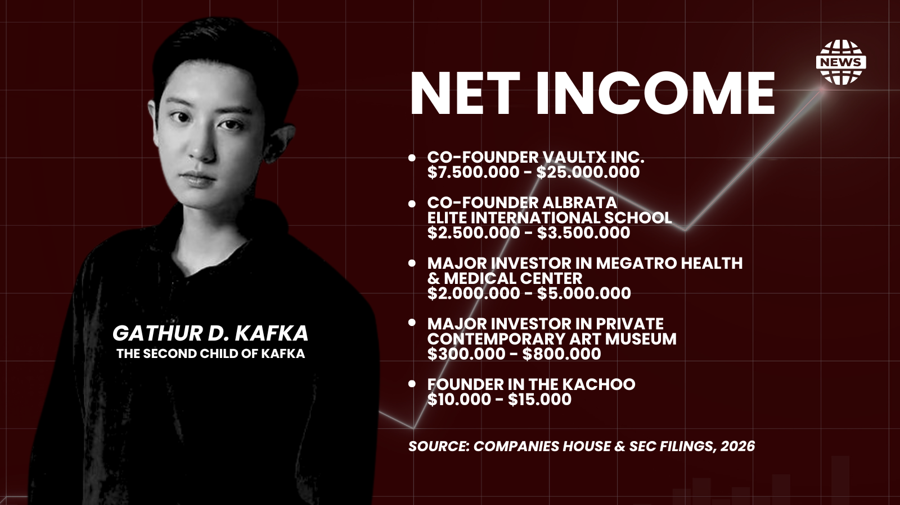

LONDON — Kafka Company has officially entered a critical grace period ahead of an impending restructure in major shareholding, a move set to trigger a high-stakes shift in the company's upper echelons.
Kafka Company is a multi-sector conglomerate with a powerful presence across finance, tourism, and education. The enterprise has dominated the business under Edward Kafka, Gilbert Kafka, and Mautier Doe Kafka—collectively recognized as the Kafka Family.

Edward, the founder of Kafka Company, recently marked a major expansion with the grand opening of a new five-star hotel in Paris. During the high-profile launch, his statements caught the public's attention as he expressed immense pride and absolute confidence in the capabilities of his sons, Theodore Kafka and Gathur D. Kafka.
The public has effectively narrowed this corporate succession down to a battle between the two top-performing executives. Analysts are already drawing sharp contrasts between the commercial strategies and public influence of them.
Theodore Kafka has built a powerful corporate portfolio at the intersection of healthcare and commerce. By establishing multiple hospital networks and heavily funding medical R&D, his strategic positioning in global health insurance programs has made him an indispensable asset to the industry.
Gathur D. Kafka, however, is widely perceived as the frontrunner when it comes to raw commercial momentum. Commercial House & SEC report that Gathur's personal net income from his companies is already closing in on the valuation of Kafka Company itself, a staggering financial leverage that gives him a massive advantage.

With a heavy background in tech innovation and business, Gathur has consistently dictated market trends rather than just following them, successfully launching wave after wave of disruptive consumer trends across major digital platforms. Furthermore, his multilingual fluency serves as a sharp tool for global corporate diplomacy, allowing him to seamlessly secure international market share and public backing with remarkable ease.
Both Theodore and Gathur remain locked in a fierce battle to secure their public images. However, Edward's sons face further pressure from the wider Kafka family. The public remains highly aware of the children of Gilbert Kafka and Mautier D. Kafka, who are expected to enter this corporate shareholding battle. The upcoming boardroom showdown will ultimately decide who takes the wheel of the Kafka Company.
Comments